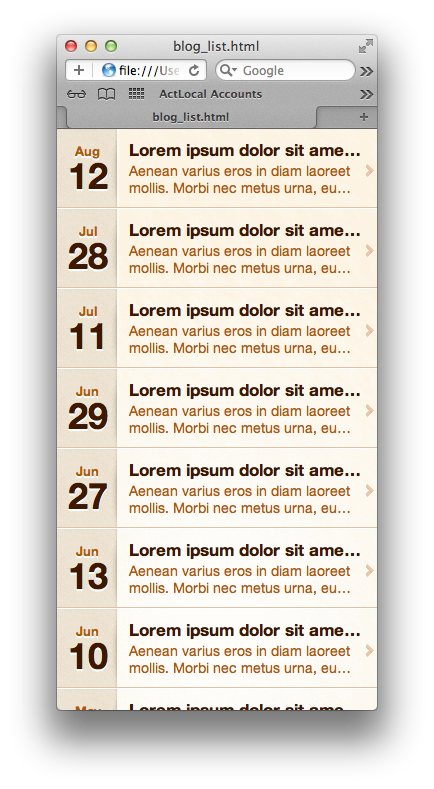
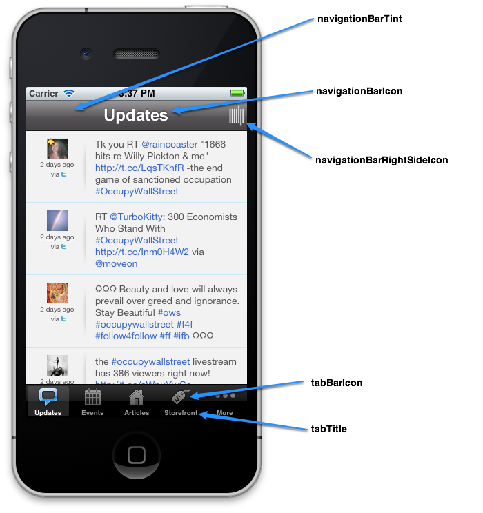

Getting Started With Act Local Themes version: 06 Jan 2012
Introduction
Act Local Themes are used to format and display the content from our CMS in our customers’ apps. Act Local apps are made up of various modules, each of which is designed to display a particular kind of content, like blog posts, videos, photos, etc. Below, you’ll find a discussion of how the modules generally work and then some information on each individual module type.
Platform background
The Act Local App platform consists of three main parts.
-
The Act Local CMS is the tool (at http://apps.actlocalmedia.com) that customers use to input content, configure social feeds, and manage their apps.
-
Act Local builds a variety of native App Players that run on various platforms like iOS, Android, and eReader platforms like B&N Nook, Kobo Vox, and Amazon Kindle Fire.
-
Act Local Themes specify the format and display of the content from the CMS in our customers’ apps. Themes are built in HTML5 / CSS3 and can be completely customized using this design kit.
Design goals and supported platforms
An Act Local Theme can be used on any supported device or platform. That means a theme’s design must support a flexible layout in which the dimensions of the view are not known until runtime. Due to the constantly shifting variety of screen sizes found on mobile and tablet devices, flexible layout is a requirement.
Act Local Themes are built with HTML5 and CSS3, and generally run on very capable browser platforms (currently Android 2.2+ and iOS 4+), so it is possible to use things like CSS media queries to provide a responsive design that adapts itself to the users’ device. jQuery is a standard part of the theme environment, so additional capabilities not provided by the browser itself are available as well.
An Act Local Theme consists of one or more HTML pages for each of the module types supported by Act Local’s CMS. To create a theme, you simply create HTML and CSS (and optionally Javascript) that renders the content for that module. Please Note: you MUST use the Safari browser (on either Windows or Mac) for all of your experimentation and testing. Other browsers, like Firefox, can be used for development, but the WebKit html and css layout engine is what is found on the vast majority of Act Local’s supported platforms and so all final testing needs to be performed there. Note also that Chrome is currently unsupported as it does not allow reading of local data files via AJAX to file:// urls.
Testing your theme
We are currently working on ways for you to test themes in development using an Act Local Player app on a mobile device. In the meantime, you can use Safari on a PC or Mac to simulate the rendering environment on the phone. We also recommend you use an iOS and Android device to test any CSS3 features you make use of to verify they are supported. Your theme should work on Android 2.2+ as well as iOS 4.0+.
Mobile devices come in a variety of screen sizes. We recommend you use a tool like http://resizemybrowser.com to test your theme at least with the following common widths found on mobile devices:
- 320px (iOS)
- 480px (Android phones)
- 540px (Android phones)
- 600px (Amazon Kindle Fire, Nook Color/Tablet, Kobo Vox)
- 720px (Android phones)
In addition, you can use media queries to add additional content for devices with additional screen width, like iPad or higher resolution Android tablet in landscape mode (1024 or greater pixels wide).
A word on fonts
It’s important to note that mobile devices have far more limited processing power than your desktop computer. We do not currently recommend the use of installable web fonts due to spotty support on mobile devices as well as performance issues.
iOS has approximately 20 fonts available for your use. More info can be found at http://daringfireball.net/misc/2007/07/iphone-osx-fonts.
Android devices have a much more limited font set available:
- Droid Sans (regular, bold)
- Droid Sans Mono (regular, bold)
- Droid Serif (regular, italic, bold, bold italic)
More information on fonts available on all Android devices can be found at http://droidfonts.com.
Module Introduction
It is simplest to explain the environment that a module’s HTML executes in by walking through an example. We’ll use the Blog module, which is found in almost every Act Local app, as our running example.
When the app is started up on a phone or tablet, native code reads a metadata file that comes with your theme to tell it what modules exist and what html pages need to be loaded. You can find this file in www/metadata_base.json. We’ll have a full discussion of the contents of this file below, but for now, the important thing to note is that there is an entry in this file for each of the module types. If we look for “blog” we’ll see that the blog module asks to have “blog_list.html” displayed as the “home page” for this module. A module can have as many pages as you need for your design; you just need to tell the system (via the “page” entry in metadata_base.json) which page should be displayed first.
Go ahead and open www/blog_list.html in a new Safari window (again, you can use Firefox but you MUST use Safari for final testing. Also, Chrome is known to not work as a browser due to its disallowing file:/// URLs for AJAX reads). You can just open a new Safari window and then use File -> Open File, or enter the url file:///(path to files)/www/blog_list.html into the URL bar.
You should see something like the following:

What’s happened is that the blog_list.html page (which is quite simple, go ahead and open it in your favorite text editor) read in a JSON file called www/data_feeds/blog_list.json. If you open that json file, you’ll see all the information that the Act Local CMS provided for the blog module to display in this app.
HTML Templating
In order to place information from the blog_list.json data feed, the blog_list.html page uses a simple javascript tempting library called HandlebarsJS. Althought a complete discussion of Handlebars is beyond our scope here, it should be easy to understand what is going on by looking at the template found in the html source and comparing to what is rendered in the browser. We recommend using Safari’s developer tools to inspect the html generated at page runtime.
In all of the module pages in the theme that render data from the Act Local CMS (which is most of the pages), the html <body> tag for the page contains only placeholder content which is replaced at runtime when Handlebars renders the template onto the page.
Page Navigation
One of the few areas in which the template page needs to interact with the underlying player is in performing a page navigation. As you can see in the Handlebars template in blog_list.html, we capture clicks to items in the list and send them to a function defined elsewhere. This function checks to see if the page is being viewed in an Act Local player app (by seeing if the global Phonegap.available flag is true), and if so, calls into the native player to perform a page navigation. We do this so that our apps have the look and feel of a native app, with complete normal screen-transition animations, etc. If the page is being viewed in a desktop browser, we use a standard window.location change to navigate.
There are a few other available calls that you can use if you’re really wanting to build a truly custom theme. Those are documented below. In all cases, it’s best to wrap those calls in a check to see if you’re running natively so the page can continue to be used in a desktop browser for development.
When a user clicks a link in blog_list.html, they’re navigated over to blog_detail.html, with a query string parameter called d. d contains the name of the json file that needs to be rendered by blog_detail.html in order to show the actual blog post on screen to the user. The Act Local CMS generates a separate json file for each blog post, so the d parameter is used by blog_detail.html to know which one to display on screen.
Note that at this time you MUST supply a d parameter to blog_detail.html (and other detail pages in other modules) in order for them to render content. If you do not, they will render only a blank page Always start from a module’s home page (like blog_list.html) and click to navigate into a detail page.
Configuring the theme’s tabs and titles
When an Act Local App player starts up, it downloads a copy of the theme associated with the app from an Act Local server. It then looks at the contents of the www/metadata_base.json file to figure out all of the various settings associated with the app.
The following screenshot highlights some of the important settings controlled by this file:

Each module type has an section in this file. Inside of each section, you can set the values below. Make sure any changes you make to the file are valid JSON and that all paths for images, etc are relative paths.
-
page: The file containing the home page for this module
-
showsNavigationBar: Either true or false, depending on if you want the module to hide the navigation bar. In general, leave this true.
-
navigationBarTint: The hex color value that we should tint the background of the navigation bar. Only #RRGGBB values are supported at this time.
-
navigationBarIcon: The image that we should use to identify the module on the navigation bar. This is displayed centered both horizontally and vertically; use a transparent background so that the texture applied to the navigation bar on some devices (iPhone and iPad) shows properly. Also, provide both a “normal” and an “@2x” image (which has its resolution doubled in both dimensions) to be used on higher resolution displays like iPhone 4/4S and higher-resolution Android devices.
-
navigationBarRightSideIcon: An image to display on the far right side of the navigation bar. Can be useful for a logo of the customer if they have several related apps.
-
navigationBarBackButtonTint: A Tint color to apply to the Back button when displaying a detail page. Only used on iOS as other platforms have hardware back buttons. Only #RRGGBB values are supported at this time.
-
tabTitle: The text to write on the tab for this module, below the tab icon. E.g. ‘Articles’, ‘Updates’, etc.
-
tabIcon: The tab icon to use for this module. Again, provide both a “normal” and an “@2x” image. Tab Icons must conform to the iOS standard for icon formatting; only the alpha channel of the image is used for display. See an iOS Tab Bar Icon tutorial like this one for details.
Note that in addition to the section for each module type, there is also a section (‘moreTab’) for the More tab that appears on iOS devices only. On the More tab, the only elements that can be configured are navigationBarTint and navigationBarIcon.
Setting the module order
Inside of the www/metadata_base.json file, there is a section titled modules. It sets the default order of the tabs for an app that is using this theme. You might want to change this order if, for instance, the theme is specifically designed to highlight items for sale; the storefront module would likely be placed first in a case like that.
"modules": [
"social",
"events",
"meetupmap",
"blog",
"storefront",
"photos",
"videos",
"podcasts",
"bio",
"saved",
"about"
]To change the order of the tabs in your theme, just move items around in this list. Be sure to keep the quote marks and commas straight as you edit the file!
Module Reference
After reading the above introduction to how modules work, you’re ready to start working on modifying a template design. Below you’ll find a list of all of the supported modules and some basic information about each one.
In general a module is made up at least of a “home” or “list” page that shows an overview of the content available in the module, and then one or more detail pages that is used to drill into the content in the module.
-
About
The About module is used by Act Local to identify the apps as coming from our platform. This module is simple static HTML and it’s usually found as the very last tab in the app.
Home page: www/about.html
Data file: None
Metadata_base.json Section:about -
Bio
The Bio module displays a photo or logo for the customer, along with some HTML containing bio text for the customer. It also optionally includes a link to their home page.
Home page: www/bio.html
Data file: www/data_feeds/bio.json
Metadata_base.json Section:bio -
Blog
The Blog module renders posts from an RSS feed into the app.
Home page: www/blog_list.html
Other pages: www/blog_detail.html
Data files: www/data_feeds/blog_list.json, www/data_feeds/blog_detail_xxx.json
Metadata_base.json Section:blog -
Events
The Events module renders events from a Google Calendar or Meetup group, or manually uploaded event data. If the event included a location, its detail page will also link to a map detail page with a pinpoint on the exact location of the event.
Home page: www/event_list.html
Other pages: www/event_detail.html, www/event_detail_map.html
Data files: www/data_feeds/event_list.json, www/data_feeds/event_detail_xxx.json
Metadata_base.json Section:events -
Event Map
The Event Map module is an alternate home page that shows all of the events on a zoomed out map rather than on a simple list. It is designed for apps that include national or international events, or for organizations using tools like Meetup Everywhere to coordinate activities among many different cities. If the user taps on any individual event, they are taken to a detail page with its information, and offered a link to a map with a pinpoint on the exact location of the event.
Home page: www/event_list_map.html
Other pages: www/event_detail.html, www/event_detail_map.html
Data files: www/data_feeds/event_list_map.json, www/data_feeds/event_detail_xxx.json
Metadata_base.json Section:meetupmap -
Photos
The Photos module shows a collection of photos from Flickr, Facebook, or manually uploaded photos.
Home page: www/photo_list.html
Other pages: www/photo_detail.html
Data files: www/data_feeds/photo_list.json, www/data_feeds/photo_detail_xxx.json
Metadata_base.json Section:photos -
Podcasts
The Podcasts module shows a collection of audio files that include appearances by the app’s owner or that are somehow related to the app’s content.
Home page: www/podcast_list.html
Other pages: www/podcast_detail.html
Data files: www/data_files/podcasts_list.json
Metadata_base.json Section:podcasts -
Saved
The Saved module is used to display content that has been saved by the user for reading later. Currently only blog posts are supported.
Home page: www/saved_list.html
Other pages: www/saved_blog_detail.html
Data files: www/data_files/saved_content.json
Metadata_base.json Section:saved -
Social
The Social module displays news from Twitter or Facebook status updates.
Home page: www/social_list.html
Other pages: None
Data files: www/data_files/social_list.json
Metadata_base.json Section:social -
Storefront
The Storefront module displays items that can be purchased related to the content of this app. It may include links to online retailers who carry the item, and in the future it may link to in-app purchase for the item.
Home page: www/storefront_list.html
Other pages: www/storefront_detail.html, www/storefront_detail_multibuy.html
Data files: www/data_files/storefront_list.json, www/data_files/storefront_detail_xxx.json
Metadata_base.json Section:storefront -
Videos
The Videos module displays video content related to the owner or content of this app. Videos can come from YouTube, Vimeo, or from manually uploaded content.
Home page: www/video_list.html
Other pages: www/video_detail.html
Data files: www/data_files/video_list.json, www/data_files/video_detail_xxx.json
Metadata_base.json Section:videos
metadata_base.json reference
TBD.
Native call reference
Note: The following calls are available on the Act Local Player 1.0. More docs are TBD.
ALMPlugin.launchMoviePlayer - Launch the native media player for the given url.
ALMPlugin.navControllerNavigate - Cause the native player to navigate the current view to a new url
ALMPlugin.setupSharableContent - Configure the content that can be shared or saved from this view
ALMPlugin.deleteSavedForDetail - Delete the specified shared content
Questions?
If you have questions regarding the process of creating a theme, please don’t hesitate to ping us at themes@actlocalmedia.com.